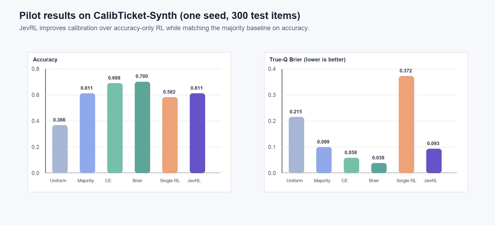
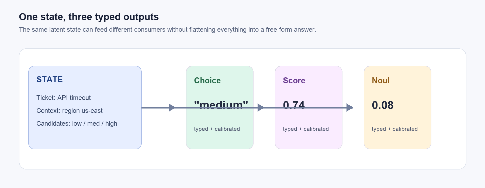
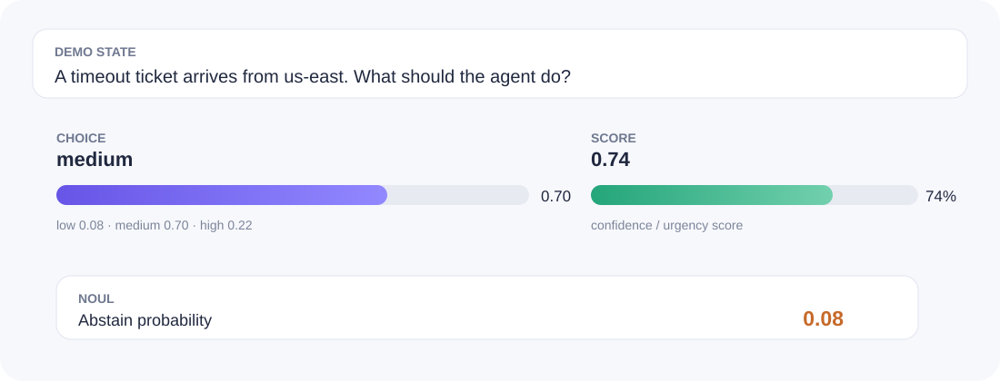

Typed by construction
Choice, Score, and Noul are separate values that downstream code can consume directly.
Independent Researcher · JevRL Project
JevRL is a minimal research interface for software that needs decisions it can inspect, score, and safely decline.
Choice, Score, and Noul are separate values that downstream code can consume directly.
A two-sample reward discourages brittle certainty and keeps probability mass meaningful.
Frozen Qwen2.5-0.5B, a 142K-parameter head, one GPU, and a released Slurm runbook.
The pilot isolates the interface idea: keep the language model fixed and learn only the small decision head.
Figure 1. State → frozen Qwen2.5-0.5B → typed head → proper two-sample reward.
Given a state and candidate set, the frozen backbone produces a hidden representation. The head emits a categorical distribution over candidates, a bounded scalar, and a null probability.
In the categorical setting, the expected reward is ||q||² − ||p − q||². Maximizing it is equivalent to minimizing a squared probability error up to a constant.
Drag the difficulty control to inspect how a decision can become less certain without turning into a free-form paragraph.
A small browser-native visualization of the released interface. The page is static; the repository contains the model-backed implementation.
stateCalibTicket-Synth · 600 train / 300 test · seed 7 · frozen Qwen2.5-0.5B · one H800.

Figure 2. JevRL matches majority accuracy while avoiding the overconfidence of single-sample accuracy RL.
| Method | Acc. | Brier ↓ | ECE ↓ |
|---|---|---|---|
| Uniform | .366 | .215 | .143 |
| Majority | .611 | .099 | .024 |
| CE | .688 | .058 | .054 |
| Brier | .700 | .038 | .060 |
| Single-sample RL | .582 | .372 | .393 |
| JevRL | .611 | .093 | .040 |
True-target metrics use the latent q only for evaluation. This is a one-seed synthetic pilot, not a state-of-the-art claim.

Figure 3. The same state can feed a choice, score, and abstention consumer.

A browser-native rendering of the demo JSON released with the code.
The PDF and code are released together so the pilot can be inspected end to end.
@article{tegong2026jevrl,
title={JevRL: Calibrated Typed Decisions from Language Models via Reward Learning},
author={Tegong, Guobao},
journal={JevRL Technical Report},
year={2026},
note={One-seed synthetic pilot},
url={https://jevrl.github.io/}
}